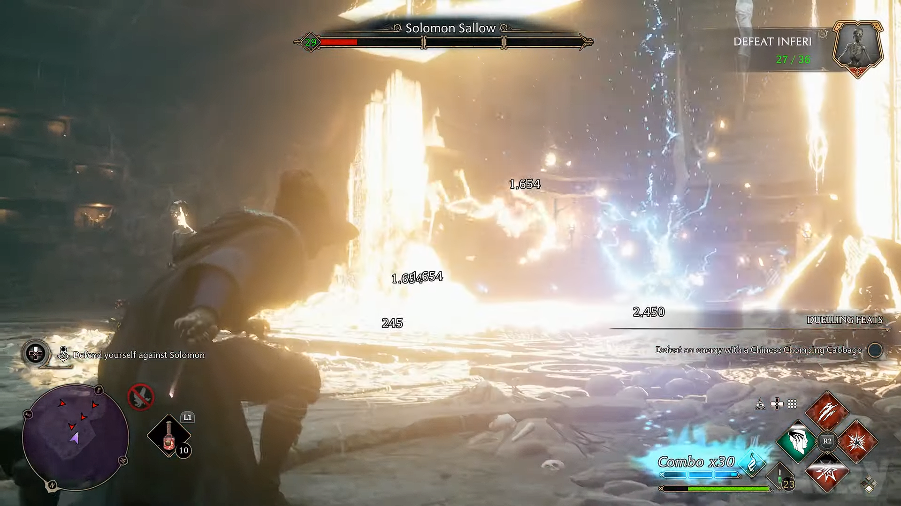
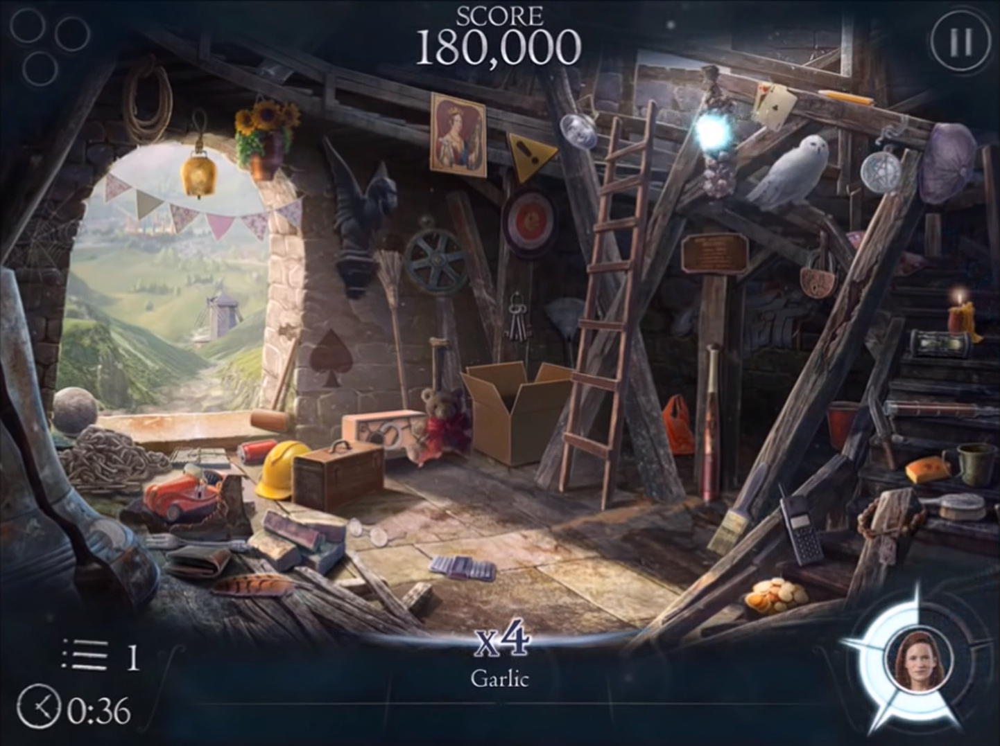

Jogos para PC/Console
Harry Potter and the Philosopher's Stone

Harry Potter and the Philosopher's Stone (ou Harry Potter and the Sorcerer's Stone nos EUA) é um jogo eletrônico de ação e aventura baseado no livro e filme de mesmo nome da série Harry Potter, escrita por J.K. Rowling. Foi desenvolvido pela Argonaut Games e publicado pela Electronic Arts.
No jogo, os jogadores assumem o papel de Harry Potter, um jovem bruxo que descobre seu lugar no mundo mágico ao ingressar na Escola de Magia e Bruxaria de Hogwarts. A história segue de perto os eventos do primeiro livro/filme, onde Harry embarca em uma jornada para desvendar os segredos da Pedra Filosofal e enfrentar o maligno Lord Voldemort.
Harry Potter and the Philosopher's Stone apresenta uma jogabilidade em terceira pessoa, com os jogadores explorando o ambiente de Hogwarts e participando de várias atividades e desafios mágicos. Eles podem interagir com personagens icônicos, como Ron Weasley e Hermione Granger, e aprender feitiços, resolver quebra-cabeças e enfrentar criaturas mágicas ao longo do caminho.
O jogo oferece uma série de locais familiares, como a sala comunal da Grifinória, a aula de Poções, o campo de quadribol e a Floresta Proibida. Os jogadores também podem desbloquear novos feitiços e habilidades à medida que avançam na história.

Com gráficos coloridos e uma trilha sonora envolvente, Harry Potter and the Philosopher's Stone permite que os fãs mergulhem no mundo mágico de Harry Potter e revivam os eventos emocionantes do primeiro livro/filme. É uma experiência cativante para os fãs da série, permitindo que eles vivam a fantasia de ser o famoso bruxo Harry Potter em sua primeira aventura em Hogwarts.
Harry Potter: Quidditch World Cup

"Harry Potter: Quidditch World Cup" é um jogo de videogame baseado no esporte fictício de quadribol, apresentado nos livros e filmes da série "Harry Potter" de J.K. Rowling. Desenvolvido pela EA Games, o jogo foi lançado para várias plataformas, incluindo PlayStation 2, Xbox, GameCube e PC.
O objetivo principal do jogo é permitir que os jogadores vivenciem a emoção e a competição do quadribol, um esporte popular no mundo mágico de Harry Potter. Os jogadores têm a oportunidade de controlar equipes nacionais e escolares de quadribol em busca do prestigioso Troféu da Copa Mundial de Quadribol.
O jogo oferece modos de jogo diferentes, incluindo a campanha da Copa Mundial, onde os jogadores competem contra equipes de todo o mundo para alcançar a vitória final. Cada equipe possui seu próprio estilo de jogo, estratégias e habilidades únicas, o que adiciona diversidade e desafios ao longo do jogo.
Durante as partidas, os jogadores podem controlar tanto os jogadores individuais quanto o apanhador, que busca capturar o Pomo de Ouro para encerrar o jogo. O jogo combina elementos de ação e simulação, permitindo que os jogadores executem manobras acrobáticas no ar, lancem feitiços para atrapalhar os oponentes e marquem pontos através dos aros.

"Harry Potter: Quidditch World Cup" também apresenta gráficos e áudios impressionantes que recriam a atmosfera mágica dos filmes. Os jogadores podem desfrutar de estádios famosos, como o campo de quadribol de Hogwarts e os locais das finais da Copa Mundial.
Com sua jogabilidade divertida e empolgante, "Harry Potter: Quidditch World Cup" oferece aos fãs a oportunidade de participar do esporte mais emocionante do mundo de Harry Potter. Os jogadores podem mergulhar no universo mágico, experimentando a adrenalina e a emoção de voar em suas vassouras, lançar feitiços e competir em uma das atividades mais amadas pelos personagens da série.
Harry Potter and the Prisoner of Azkaban

"Harry Potter and the Prisoner of Azkaban" é um jogo de videogame baseado no terceiro livro da série "Harry Potter" de J.K. Rowling e no filme homônimo. Desenvolvido pela EA Games, o jogo foi lançado para várias plataformas, incluindo PlayStation 2, Xbox, GameCube e PC.
No jogo, os jogadores assumem o papel do protagonista Harry Potter e seus amigos Ron Weasley e Hermione Granger, enquanto eles embarcam em uma nova aventura durante seu terceiro ano na Escola de Magia e Bruxaria de Hogwarts. A trama do jogo segue de perto a história do livro e do filme, com Harry descobrindo sobre o perigoso prisioneiro de Azkaban, Sirius Black, e a ameaça que ele representa.
O jogo apresenta uma jogabilidade de ação e aventura em um ambiente de mundo aberto, permitindo que os jogadores explorem livremente os terrenos de Hogwarts e outras áreas icônicas do universo de Harry Potter. Ao longo do jogo, os jogadores enfrentam desafios, resolvem quebra-cabeças e interagem com personagens do livro e do filme, incluindo professores e alunos de Hogwarts.
Harry, Ron e Hermione também aprendem novos feitiços e habilidades que os ajudam a progredir na história. Eles podem lançar feitiços, como Expecto Patronum e Riddikulus, para derrotar criaturas sombrias, superar obstáculos e avançar nas missões.

Além da história principal, o jogo apresenta várias missões secundárias e atividades opcionais que os jogadores podem explorar para desbloquear conteúdo adicional e ganhar recompensas. Também há a opção de jogar minijogos multiplayer com outros personagens, oferecendo uma experiência divertida para jogar com amigos.
Com seus gráficos envolventes, trilha sonora cativante e jogabilidade baseada na exploração e na resolução de quebra-cabeças, "Harry Potter and the Prisoner of Azkaban" oferece aos fãs uma oportunidade emocionante de mergulhar ainda mais no mundo mágico de Harry Potter, revivendo os eventos do terceiro ano do jovem bruxo e enfrentando perigos enquanto desvendam os mistérios de Azkaban.
Harry Potter and the Goblet of Fire

"Harry Potter and the Goblet of Fire" é um jogo de videogame baseado no quarto livro da série "Harry Potter" de J.K. Rowling e no filme homônimo. Desenvolvido pela EA Games, o jogo foi lançado para várias plataformas, incluindo PlayStation 2, Xbox, GameCube e PC.
O jogo acompanha Harry Potter e seus amigos Ron Weasley e Hermione Granger enquanto eles vivenciam os eventos emocionantes do Torneio Tribruxo. Os jogadores assumem o controle dos personagens principais e enfrentam desafios perigosos, resolvem quebra-cabeças e lutam contra criaturas mágicas enquanto avançam na história.
A jogabilidade é uma combinação de ação, aventura e elementos de RPG. Os jogadores podem alternar entre os personagens para aproveitar suas habilidades únicas. Harry é especializado em lançar feitiços, Ron é habilidoso com xadrez de bruxo e Hermione é experiente em poções e magias.
Durante o jogo, os jogadores exploram diversos ambientes, incluindo a Escola de Magia e Bruxaria de Hogwarts, a Floresta Proibida e outros locais icônicos da série. Eles enfrentam desafios em cada fase, incluindo criaturas mágicas hostis e quebra-cabeças que exigem o uso de habilidades específicas.
O jogo também inclui batalhas contra chefes, que são encontros épicos com inimigos poderosos que testam as habilidades dos jogadores. Além disso, os jogadores podem desbloquear feitiços e habilidades adicionais à medida que avançam no jogo, proporcionando uma experiência de jogo mais variada e emocionante.

"Harry Potter and the Goblet of Fire" apresenta gráficos e trilha sonora envolventes que ajudam a recriar a atmosfera mágica dos filmes. O modo cooperativo também permite que os jogadores se juntem a amigos para enfrentar os desafios do Torneio Tribruxo juntos.
Com sua jogabilidade envolvente e recriação fiel dos eventos do livro e do filme, "Harry Potter and the Goblet of Fire" oferece aos fãs uma oportunidade emocionante de mergulhar no mundo mágico de Harry Potter, vivenciando a ação e a emoção do Torneio Tribruxo ao lado de seus personagens favoritos.
Harry Potter and the Order of the Phoenix

"Harry Potter and the Order of the Phoenix" é um jogo de videogame baseado no quinto livro da série "Harry Potter" de J.K. Rowling e no filme homônimo. Desenvolvido pela EA Games, o jogo foi lançado para várias plataformas, incluindo PlayStation 2, Xbox 360, Wii, PlayStation 3 e PC.
O jogo acompanha a história de Harry Potter durante seu quinto ano em Hogwarts, quando ele forma a "Armada de Dumbledore" para se opor à tirania do Ministério da Magia e de Dolores Umbridge, a nova professora de Defesa Contra as Artes das Trevas.
Os jogadores assumem o papel de Harry e exploram livremente o ambiente de Hogwarts em um mundo aberto. Eles podem interagir com personagens conhecidos da série, completar missões e participar de aulas para aprender novos feitiços e habilidades mágicas.
A jogabilidade combina elementos de ação, aventura e exploração. Os jogadores podem explorar as várias áreas de Hogwarts, como a Sala Comunal da Grifinória, a sala de aula de Snape e a Floresta Proibida, enquanto completam missões e resolvem quebra-cabeças.
O jogo também apresenta duelos mágicos, onde os jogadores podem enfrentar outros personagens em batalhas cheias de feitiços e estratégia. Eles também podem utilizar os poderosos feitiços do filme, como Expelliarmus e Expecto Patronum, para derrotar inimigos e progredir na história.

"Harry Potter and the Order of the Phoenix" possui gráficos detalhados que capturam a atmosfera do mundo mágico de Harry Potter, bem como dublagem e trilha sonora autênticas dos filmes, o que aumenta a imersão na experiência de jogo.
Com sua narrativa envolvente, exploração livre de Hogwarts e jogabilidade variada, "Harry Potter and the Order of the Phoenix" oferece aos fãs uma oportunidade emocionante de vivenciar os eventos do quinto ano de Harry Potter, enfrentando desafios, fortalecendo habilidades mágicas e lutando contra a opressão enquanto se une à Ordem da Fênix.
Harry Potter and the Half-Blood Prince

"Harry Potter and the Half-Blood Prince" é um jogo de videogame baseado no sexto livro da série "Harry Potter" de J.K. Rowling e no filme homônimo. Desenvolvido pela EA Games, o jogo foi lançado para várias plataformas, incluindo PlayStation 2, Xbox 360, Wii, PlayStation 3 e PC.
O jogo segue a história do sexto ano de Harry Potter em Hogwarts, enquanto ele desvenda os segredos do Príncipe Mestiço e se prepara para a batalha final contra Voldemort. Os jogadores assumem o papel de Harry e têm a oportunidade de explorar o mundo mágico de Hogwarts, interagir com outros personagens e participar de missões que se desenrolam ao longo do enredo.
O foco principal do jogo está na resolução de quebra-cabeças, na conclusão de tarefas e na realização de atividades relacionadas ao mundo de Harry Potter. Os jogadores podem participar de aulas, como aulas de poções ministradas pelo professor Slughorn, onde precisam executar sequências de botões para criar poções corretamente. Eles também podem praticar feitiços, como o Wingardium Leviosa e o Lumos, para superar obstáculos e resolver enigmas.
Além disso, o jogo permite aos jogadores explorar livremente o castelo de Hogwarts, interagir com personagens famosos, como Ron Weasley e Hermione Granger, e até mesmo desenvolver relacionamentos românticos. Os jogadores também têm a oportunidade de jogar quadribol, participar de duelos mágicos e descobrir segredos ocultos no mundo mágico.

"Harry Potter and the Half-Blood Prince" apresenta gráficos aprimorados em relação aos jogos anteriores da série, trazendo o mundo de Harry Potter à vida de maneira detalhada e imersiva. A trilha sonora autêntica dos filmes também contribui para a atmosfera mágica do jogo.
Com sua jogabilidade envolvente, misturando exploração, quebra-cabeças e atividades temáticas de Harry Potter, "Harry Potter and the Half-Blood Prince" oferece aos fãs uma experiência interativa emocionante, permitindo que eles mergulhem ainda mais no universo mágico enquanto acompanham a jornada de Harry em seu sexto ano em Hogwarts.
Lego Harry Potter: Years 5-7

Lego Harry Potter: Years 5-7 é um jogo eletrônico desenvolvido pela Traveller's Tales e publicado pela Warner Bros. Interactive Entertainment. É a sequência do jogo Lego Harry Potter: Years 1-4 e abrange os eventos dos últimos três filmes da série Harry Potter, ou seja, "Harry Potter e a Ordem da Fênix", "Harry Potter e o Enigma do Príncipe" e "Harry Potter e as Relíquias da Morte".
O jogo segue a história dos livros e filmes, recontando os eventos de maneira divertida e cheia de humor, no estilo dos jogos Lego. Os jogadores podem assumir o controle de vários personagens icônicos, incluindo Harry Potter, Hermione Granger, Ron Weasley e muitos outros estudantes de Hogwarts.
Lego Harry Potter: Years 5-7 apresenta uma jogabilidade de ação e aventura, combinada com quebra-cabeças e elementos de exploração. Os jogadores percorrem locais familiares, como Hogwarts, o Beco Diagonal e o Ministério da Magia, enquanto participam de missões e batalhas contra bruxos das trevas, como Lord Voldemort e seus seguidores.

Uma das características distintivas do jogo é a mecânica de construção com peças Lego. Os jogadores podem coletar tijolos e peças Lego ao longo do jogo para construir objetos e resolver quebra-cabeças. Além disso, o jogo oferece a possibilidade de jogar em modo cooperativo, permitindo que dois jogadores se unam para enfrentar os desafios juntos.
Lego Harry Potter: Years 5-7 é uma experiência divertida e familiar para fãs de Harry Potter de todas as idades. Com seu estilo visual característico, jogabilidade envolvente e fidelidade à história original, o jogo proporciona uma maneira única de reviver os momentos mágicos dos últimos filmes da saga Harry Potter.
Harry Potter for Kinect

"Harry Potter for Kinect" é um jogo de videogame baseado na popular série de livros e filmes "Harry Potter" da autora J.K. Rowling. Desenvolvido pela Eurocom e publicado pela Warner Bros. Interactive Entertainment, o jogo foi lançado exclusivamente para o console Xbox 360 com suporte ao acessório de detecção de movimento Kinect.
O objetivo principal do jogo é proporcionar aos jogadores uma experiência interativa e imersiva no mundo mágico de Harry Potter. Utilizando os recursos do Kinect, os jogadores podem se tornar bruxos e bruxas, participando de várias atividades e aventuras inspiradas nos filmes e livros.
Uma das principais características do jogo é a sua funcionalidade de detecção de movimento, que permite aos jogadores executar feitiços com gestos físicos. Eles podem lançar feitiços icônicos, como Expelliarmus e Wingardium Leviosa, através de movimentos específicos com as mãos. Além disso, os jogadores podem explorar ambientes familiares como o castelo de Hogwarts, a Floresta Proibida e a Rua dos Alfeneiros, interagindo com personagens conhecidos e enfrentando desafios emocionantes.
"Harry Potter for Kinect" apresenta vários modos de jogo, incluindo a história principal baseada nos filmes, bem como minijogos temáticos. Os minijogos oferecem uma variedade de atividades divertidas, como partidas de quadribol, duelos de feitiços, criação de poções e quebra-cabeças.
Além da jogabilidade baseada em movimento, o jogo também possui recursos de reconhecimento de voz do Kinect, permitindo que os jogadores invoquem feitiços e interajam com os personagens usando comandos de voz.
No geral, "Harry Potter for Kinect" oferece aos fãs de Harry Potter uma oportunidade única de vivenciar o mundo mágico de uma maneira diferente. Com seus recursos de detecção de movimento e reconhecimento de voz, o jogo proporciona uma experiência interativa e imersiva, permitindo que os jogadores explorem o universo de Harry Potter de uma forma divertida e envolvente.
Hogwarts Legacy
![]()
Hogwarts Legacy é um jogo eletrônico de RPG de ação desenvolvido pela Portkey Games e publicado pela Warner Bros. Interactive Entertainment. O jogo se passa no mundo mágico de Harry Potter e é ambientado no século XIX, antes dos eventos retratados nos livros e filmes da série.
No jogo, os jogadores assumem o papel de um estudante de Hogwarts, a famosa escola de magia e bruxaria. Eles têm a oportunidade de explorar um mundo aberto detalhado, incluindo as áreas icônicas de Hogwarts, como a Floresta Proibida e o vilarejo de Hogsmeade. Os jogadores também poderão viajar para além dos limites da escola, descobrindo outros locais mágicos.
Hogwarts Legacy oferece aos jogadores a liberdade de criar seu próprio personagem e determinar seu caminho dentro do universo de Harry Potter. Eles podem escolher sua casa em Hogwarts, desenvolver habilidades mágicas, participar de aulas e interagir com outros estudantes e personagens icônicos da série.
A jogabilidade é baseada em elementos de RPG, com os jogadores embarcando em missões e enfrentando desafios mágicos. Eles podem lançar feitiços, duelar com outros bruxos, explorar mistérios antigos e descobrir segredos ocultos. Suas escolhas e ações também influenciam o mundo ao seu redor, moldando a narrativa e determinando o destino do personagem.
Hogwarts Legacy promete uma experiência imersiva, com gráficos de alta qualidade, mecânicas de jogabilidade complexas e uma história rica. Os fãs de Harry Potter terão a oportunidade de mergulhar profundamente no mundo mágico que conhecem e amam, enquanto exploram uma nova era da história desse universo fascinante.
Mobile Games
Lego Harry Potter: Years 1-4

"Lego Harry Potter: Years 1-4" é uma adaptação móvel do popular jogo de videogame baseado na série "Harry Potter" de J.K. Rowling. Desenvolvido pela TT Games, o jogo foi lançado para dispositivos móveis, como smartphones e tablets.
O jogo abrange os quatro primeiros anos da história de Harry Potter em Hogwarts, desde seu primeiro encontro com Hagrid até o confronto com Voldemort no Cemitério de Little Hangleton. No jogo, os jogadores podem reviver as aventuras de Harry, Ron e Hermione enquanto exploram o mundo mágico em forma de Lego.
A jogabilidade é baseada em quebra-cabeças, plataformas e combates leves. Os jogadores podem controlar diversos personagens da série, cada um com suas próprias habilidades especiais, para superar obstáculos, resolver enigmas e avançar na história. Além disso, o jogo incorpora elementos de construção com blocos Lego, permitindo que os jogadores construam e reconstruam partes do ambiente para progredir.
Ao longo do jogo, os jogadores podem desbloquear novos personagens, veículos e itens colecionáveis, adicionando um elemento de exploração e descoberta ao jogo. Há também a opção de jogar cooperativamente com um amigo, o que possibilita a cooperação para resolver desafios e completar níveis.

"Lego Harry Potter: Years 1-4" mantém o estilo visual característico dos jogos Lego, com personagens e cenários recriados com blocos coloridos e humor leve. A trilha sonora familiar da série também está presente, adicionando uma atmosfera encantadora ao jogo.
Com sua jogabilidade acessível e divertida, "Lego Harry Potter: Years 1-4" para dispositivos móveis oferece aos fãs a oportunidade de reviver as primeiras quatro aventuras de Harry Potter em um formato Lego atraente. É uma opção atraente para jogadores que desejam desfrutar da magia de Harry Potter em seus dispositivos móveis
Lego Harry Potter: Years 5-7

"Lego Harry Potter: Years 5-7" é uma adaptação móvel do popular jogo de videogame baseado na série "Harry Potter" de J.K. Rowling. Desenvolvido pela TT Games, o jogo foi lançado para dispositivos móveis, como smartphones e tablets.
O jogo abrange os últimos três anos da história de Harry Potter em Hogwarts, desde o quinto ano até a batalha final contra Voldemort. Os jogadores têm a oportunidade de reviver as emocionantes aventuras de Harry, Ron e Hermione enquanto enfrentam desafios e exploram o mundo mágico em formato Lego.
A jogabilidade é baseada em quebra-cabeças, plataformas e combates leves, semelhante a outros jogos Lego. Os jogadores podem controlar uma variedade de personagens da série, cada um com suas próprias habilidades especiais, para superar obstáculos, resolver enigmas e progredir na história. Além disso, o jogo apresenta a mecânica de construção com blocos Lego, permitindo que os jogadores construam e reconstruam partes do ambiente conforme necessário.
Durante o jogo, os jogadores podem desbloquear uma grande variedade de personagens jogáveis, incluindo alunos de Hogwarts, membros da Ordem da Fênix e até mesmo vilões icônicos. Cada personagem possui habilidades únicas que podem ser usadas para superar desafios específicos e desbloquear conteúdo adicional.

"Lego Harry Potter: Years 5-7" mantém o estilo visual característico dos jogos Lego, com personagens e cenários recriados com blocos coloridos e um toque de humor. A trilha sonora e os efeitos sonoros autênticos dos filmes também são incluídos, proporcionando uma experiência imersiva aos fãs de Harry Potter.
Com sua jogabilidade acessível e divertida, "Lego Harry Potter: Years 5-7" para dispositivos móveis oferece aos jogadores a oportunidade de reviver os momentos finais da saga de Harry Potter em um formato Lego cativante. É uma opção envolvente para os fãs da série que desejam vivenciar a magia e a ação em seus dispositivos móveis.
Fantastic Beasts: Cases From the Wizarding World
"Fantastic Beasts: Cases From the Wizarding World" é um jogo de mistério e aventura baseado no universo expandido de "Animais Fantásticos e Onde Habitam", de J.K. Rowling. Desenvolvido pela Warner Bros. Interactive Entertainment, o jogo foi lançado para dispositivos móveis, como smartphones e tablets.
No jogo, os jogadores assumem o papel de um novo recruta do Departamento de Execução das Leis da Magia do Ministério da Magia. Sua tarefa é investigar e resolver uma série de casos misteriosos relacionados a criaturas mágicas e artefatos perdidos
A jogabilidade é baseada em encontrar objetos ocultos e resolver quebra-cabeças para coletar pistas e evidências. Os jogadores precisam explorar locais icônicos do mundo mágico, como o Beco Diagonal e o Banco Gringotes, enquanto entrevistam testemunhas, lançam feitiços e analisam evidências para descobrir a verdade por trás de cada caso.
Conforme os jogadores avançam no jogo, eles desbloqueiam novos locais, magias e habilidades especiais que os ajudam a resolver os casos de maneiras mais eficientes. Além disso, o jogo apresenta personagens conhecidos dos filmes "Animais Fantásticos", como Newt Scamander, Tina Goldstein e Jacob Kowalski, que fornecem assistência e orientação ao jogador durante a investigação.
"Fantastic Beasts: Cases From the Wizarding World" oferece gráficos detalhados e imersivos que capturam a atmosfera do mundo mágico de J.K. Rowling. A trilha sonora envolvente contribui para a experiência de imersão no jogo.
Com sua jogabilidade intrigante e história envolvente, "Fantastic Beasts: Cases From the Wizarding World" permite que os fãs explorem o mundo mágico além dos filmes e livros, enquanto se envolvem em mistérios e investigações emocionantes. É uma experiência atraente para os fãs da franquia que desejam mergulhar em novas aventuras no universo mágico de J.K. Rowling.
Harry Potter: Hogwarts Mystery

Harry Potter: Hogwarts Mystery é um jogo eletrônico para dispositivos móveis, desenvolvido pela Jam City e publicado pela Portkey Games. O jogo permite que os jogadores vivam a experiência de ser um estudante em Hogwarts, a famosa escola de magia e bruxaria.
No jogo, os jogadores assumem o papel de um estudante recém-chegado a Hogwarts, cujo irmão desapareceu misteriosamente anos antes. Eles podem personalizar seu avatar e escolher sua casa em Hogwarts. Ao longo do jogo, os jogadores frequentam aulas de magia, aprendem feitiços, fazem amizades e desvendam segredos dentro da escola.
Uma das características centrais do jogo é a exploração do castelo de Hogwarts e de seus arredores. Os jogadores podem interagir com outros estudantes, professores e personagens conhecidos da série Harry Potter, como Dumbledore, Snape e Hagrid. Além disso, eles podem participar de atividades extracurriculares, como a prática de esportes mágicos e duelos com outros estudantes.

Ao progredir no jogo, os jogadores enfrentam desafios e mistérios que os levam a investigar o desaparecimento do irmão do protagonista. Eles podem desvendar segredos antigos e tomar decisões que afetam o desenrolar da história. À medida que avançam em seu aprendizado, os jogadores ganham pontos de experiência e desbloqueiam novos feitiços e habilidades mágicas.
Harry Potter: Hogwarts Mystery oferece uma experiência imersiva no mundo mágico de Harry Potter, permitindo que os fãs explorem a vida estudantil em Hogwarts e descubram mais sobre a história e os mistérios desse universo. Com gráficos coloridos e uma narrativa envolvente, o jogo cativa os jogadores e os transporta para o mágico mundo de Harry Potter.